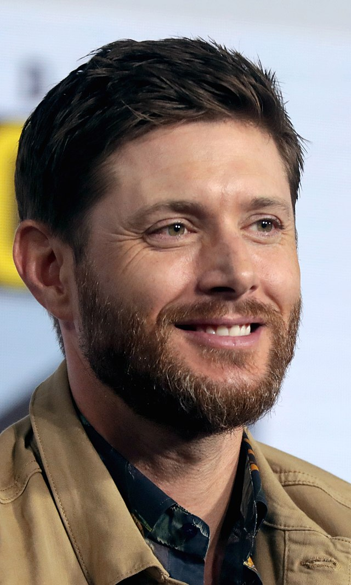

Curriculum Vitae

Jensen Ackles
Resumen
Jensen Ross Ackles es un actor y director norteamericano, nacido el 1 de marzo de 1978, en Dallas, Estados
Unidos. Hijo del actor Alan Roger Ackles, Jensen empezó a modelar frente a cámara desde los 2 años y a para
los cuatro ya aparecía con frecuencia en comerciales de Walmart y Nabisco.
Datos Personales
- Nombre: Jensen Ross Ackles
- Lugar de Nacimiento: Dallas (Texas, Estados Unidos)
- Fecha de Nacimiento: 01 de marzo de 1978
Formación
Estudió en la Lloyd V. Beckner High School, donde comenzó a tomar clases de teatro. Como recomendación de un
amigo, fue descubierto por un grupo de productores, quienes le aconsejaron mudarse a Los Angeles, pero
Jensen rechazó la idea.
Al final, decidió aceptar viajar a Los Angeles y contactar a los productores que le habían ofrecido trabajo
en la ciudad.
Poco a poco, el actor empezó a hacerse de un nombre en la televisión, gracias a series como Dawson’s Creek
(2002-2003), Still Life (2003-2004) y Smallville (2004-2005). Pero sería su siguiente proyecto el que le
daría enorme reconocimiento: Dean Winchester, en la serie Sobrenatural (2005-2018), rol que ha interpretado
a lo largo de 297 episodios.
Filmografía
Cine:
- 2004 = The Plight of Clownana
- 2005 = Devour
- 2007 = Ten Inch Hero
- 2009 = My Bloody Valentine
- 2010 = Batman: Under The Red Hood
Televisión:
- 2003 = Still life
- 2004-2005 = Smallville
- 2005-2020 = Supernatural
- 2011 = Supernatural: The Anime Series
- 2021 = The Boys
Nominaciones
Nominado en tres ocasiones, a los premios Emmy.
- People's Choice Award (2013) = Favorite Dramatic Actor (Supernatural)
- TV Guide Award (2014) = Favorite Duo (Supernatural)
- Teen Choice Award (2017) = Choice TV Actor: Fantasy/Sci-Fy(Supernatural
Premios
- Soap Opera Digest Award (1998) = Outstanding Male Newcomer (Days of Our Lives)
- TV Guide Award (2011) = Favorite Actor (Supernatural)
- Teen Choice Award (2015) = Choice TV: Chemistry (Supernatural)
- People's Choice Award (2016) = Favorite Sci-Fi/Fantasy TV Actor (Supernatural)
- CCA Super Award (2021) = Best Actor in a Horror Series (Supernatural)
Referencias
Ir a SENSACINE
Ir a WIKIPEDIA
Ir a Portafolio